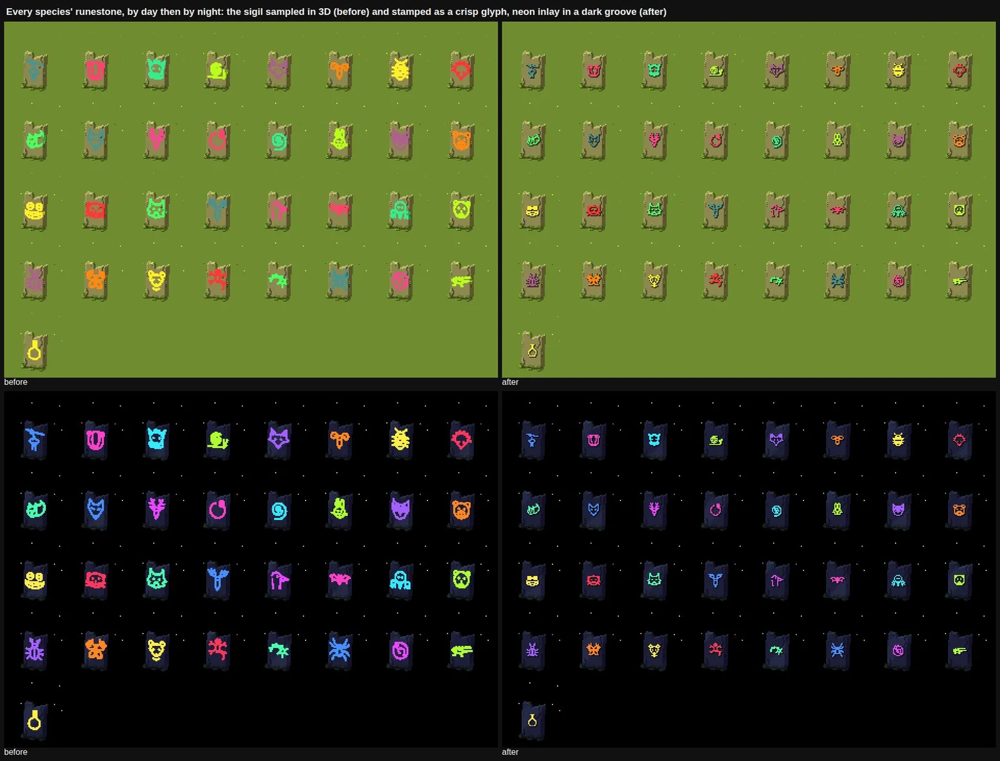
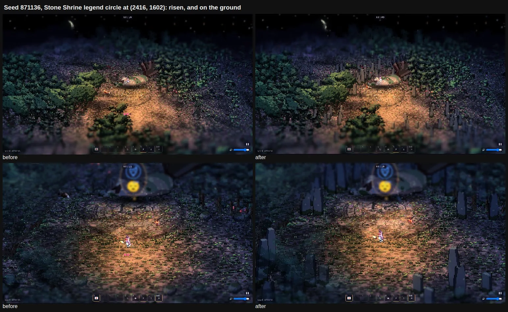
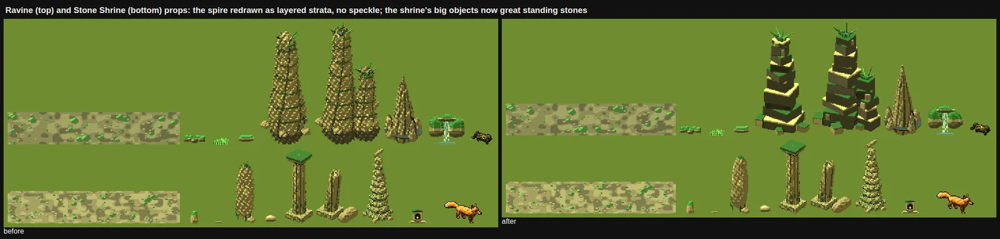
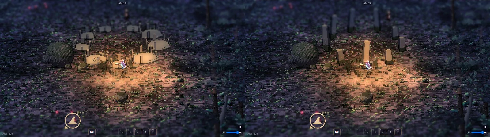
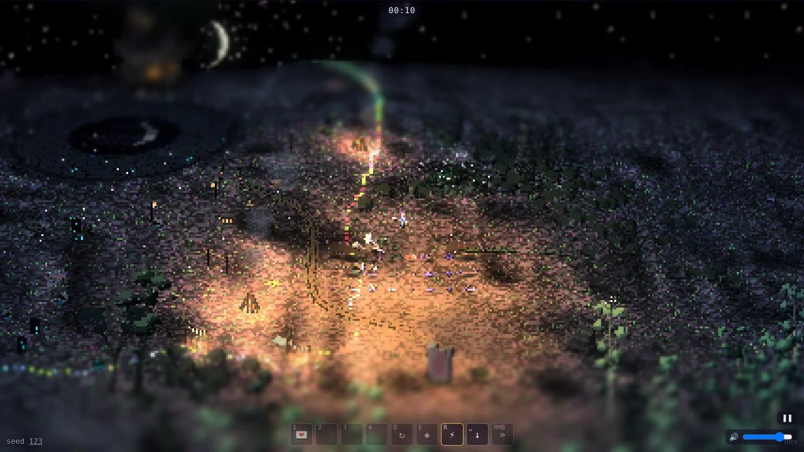
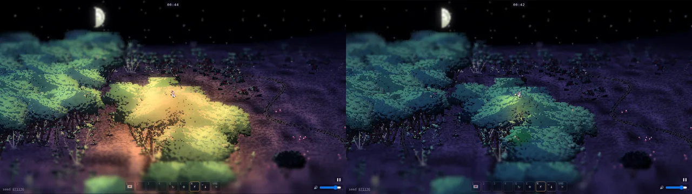
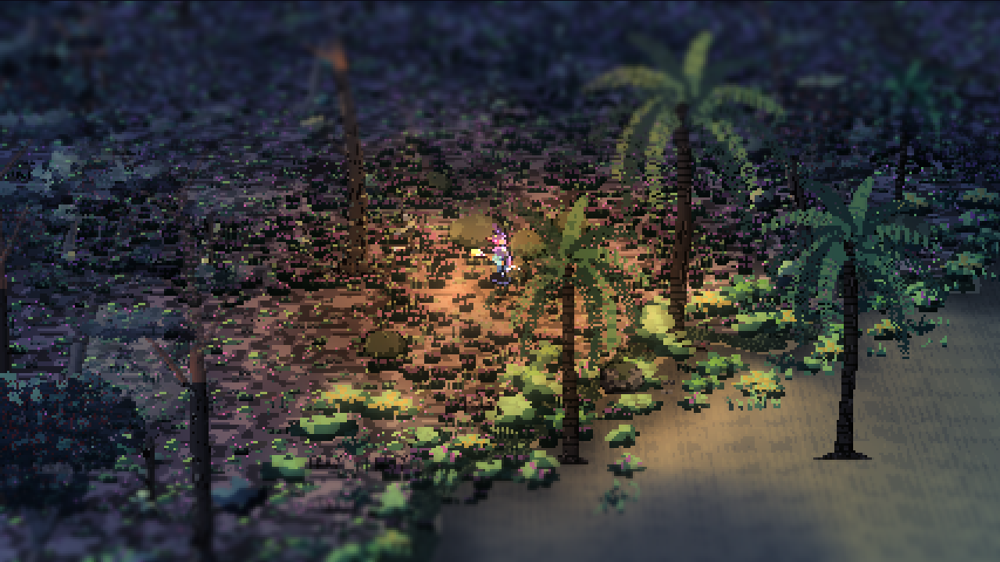
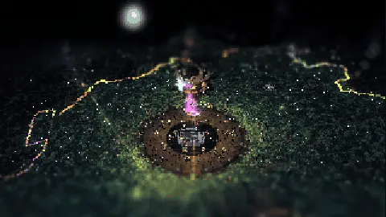
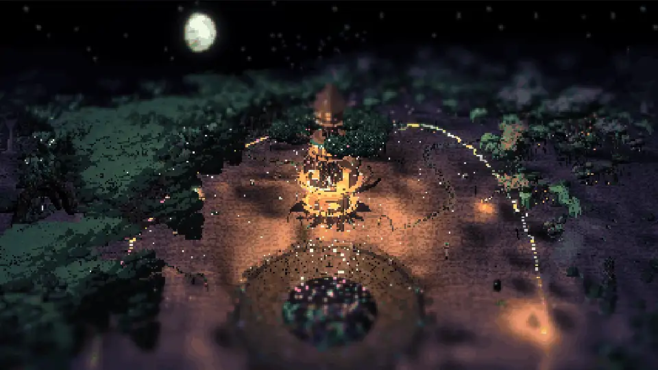
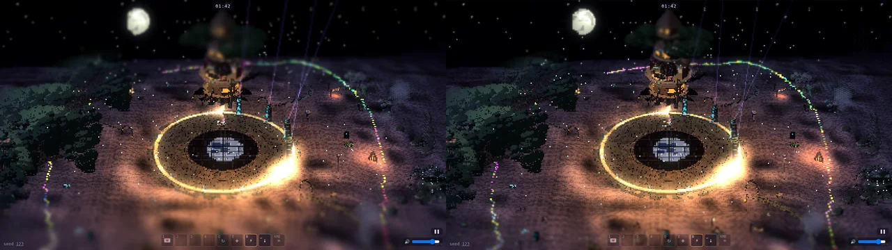

Appendix
The Builders' Notes
Each builder's own few lines: what they built, what they learned, and their best pictures.
Every builder who worked on the game adds a short note as they finish their part: what they built, what they learned, and the pictures they're proudest of.
Art builder 1 · The forest's procedural art; overnight phase 1: housekeeping
Trees, bushes, props, ground and areas grown from data, the legend clearings, every creature's sleeping art, and tonight the Stone Shrine, the ravine's spires and the runestones' sigils
What I built
- Trees and bushes grown from plant genomes by the blob generator
- The prop generator: standing stones, cairns, pools, logs, mushroom rings, boulders
- The ground generator: floors, tufts and puddles as data
- Area recipes: an area as one data object (the fen, the heronry)
- The legend clearings: a circle per legend with a carved mossy floor and a ring of the area's tallest trees
- Every creature's sleeping art
- Tonight: the Stone Shrine's great standing stones, the ravine's layered spires, and crisp neon-inlaid sigils on the runestones
- Overnight phase 1: shared helpers moved into
art/core.js, and an art check that draws every generator
What I learned
- Pixel noise reads as camouflage. Ed's "these things look strange" was a rock spire with bumpy normals plus hashed speckle. Deliberate shapes (stacked strata, flat ledges, crisp edges) read at once.
- Generators compose in surprising ways: a henge (a ring of stones) whose every stone became a whole stone circle gave Ed "a circle of stone circles".
- Small glyphs want stamping, not sampling. A sigil sampled in 3D at 40 px blurs into a blob; the same sigil stamped as a 1 to 2 px pixel glyph with a 1 px carved shadow reads by day and by night.
- "Change nothing" needs proof: every exported PNG compared byte for byte (12,274 files), plus the CI bench's pixel compare. The art check still caught a lab-page break the bench couldn't see.










Art builder 2 · Creatures, the leash, the party and the night; overnight phase 1: housekeeping
The creatures' genomes and live rig, the attack visuals, the party witches, the leash and sigil weight, the Party's Over, the beach's edge and the night's light (#291, #349, #364)
What I built
- The look of the leash: the sigil stack sways on a chain of springs above her hat, the threads draw taut and bright as the sigils' weight pulls on her, and her broom strains and sheds sparks when she's overloaded
- Tonight's phase-1 slice:
render/leash.ts(1,335 lines) split into glyphs, stack, projection, bubbles and combat, the bench confirming the same game pixel for pixel - The party witches: they fly in for each soundsystem, roam round the dancefloor and swoop past with rainbow glow trails
- The Party's Over: when the last soundsystem falls, the lights go out in a ripple outward from home
- The beach: the woods end in a scalloped edge of bushes, grass and palms that follows the sand's bays and narrows; moonlit grey sand, not daylight cream; her light a lantern's warm pool, not a sunny spotlight from the treetops; no more moiré on the sand while stargazing
- The tilt-shift: half the blur and a wider sharp band, so the miniature look stays and much less of the screen smears
What I learned
- Find the number before changing the look. The treetop glare wasn't the colour; it was her light's reach, sized as a share of the screen, which from the treetops came to 169 m. Logging that one value pointed straight at a two-line fix.
- A pixel-art shader has to know its own scale. Patterns one art pixel wide alias into stripes at a squashed camera angle; measuring art pixels per screen pixel (
fwidth) and fading the fine detail cured the stargazing moiré. - A refactor that "changes nothing" needs a machine to say so. The new bench:quick compare (same rules state, 0 pixels differing) made a 900-line move safe, and even then a parallel PR's 11-line change had to be carried into the new module by hand.
- Walk cycles are about the box as much as the legs: the heron's new 4-frame wader walk jittered until every frame shared one crop and one scale (still to come, in phase 3).









